5. งานซื้อ
05.01 — ออกและอนุมัติใบสั่งซื้อ
เงื่อนไขก่อนใช้งาน: login admin (สิทธิ์ purchase_order create + approve) · มีผู้ขาย + หน่วยธุรกิจ ในระบบ (บทที่ 3)
ใบสั่งซื้อ (Purchase Order / PO) คือเอกสารแรกของงานซื้อ — ใช้สั่งซื้อสินค้า/บริการจาก ผู้ขาย และเป็นเครื่องมือ ควบคุมการใช้จ่าย ภายในกิจการ (อนุมัติก่อนซื้อจริง).
สายงานซื้อเต็มรูป (document chain):
ใบสั่งซื้อ → บันทึกใบกำกับภาษีซื้อ (รับของ + ภาษีซื้อ) → ใบสำคัญจ่าย (จ่ายเงิน + หัก ณ ที่จ่าย) → หนังสือรับรองหัก ณ ที่จ่าย (50ทวิ)
ขั้นตอนอนุมัติ (workflow): ใบสั่งซื้อสร้างเป็น "ฉบับร่าง" ก่อน แล้วต้อง อนุมัติ จึงจะ ใช้งานต่อได้ — และระบบจะออก เลขที่เอกสาร (PO-NNNN) ตอนอนุมัติ เท่านั้น. ระบบนี้รองรับ กิจการขนาดเล็กที่มีผู้ใช้คนเดียว (ผู้สร้างอนุมัติเองได้) แต่กิจการใหญ่สามารถแยกผู้สร้าง/ ผู้อนุมัติตามสิทธิ์ได้ (Segregation of Duties).
ขั้นที่ 1
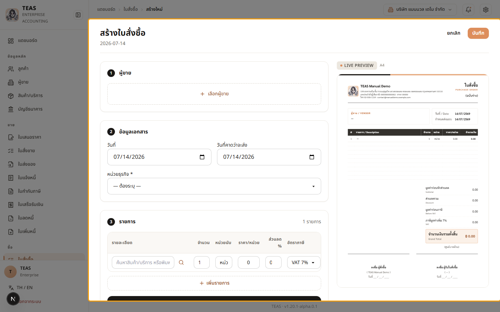
ขั้นที่ 2
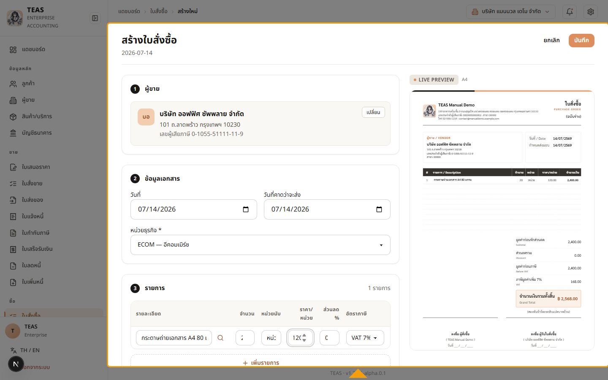
ขั้นที่ 3
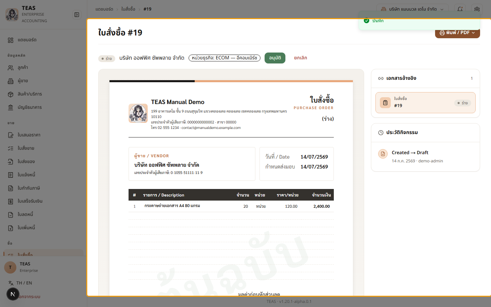
ขั้นที่ 4
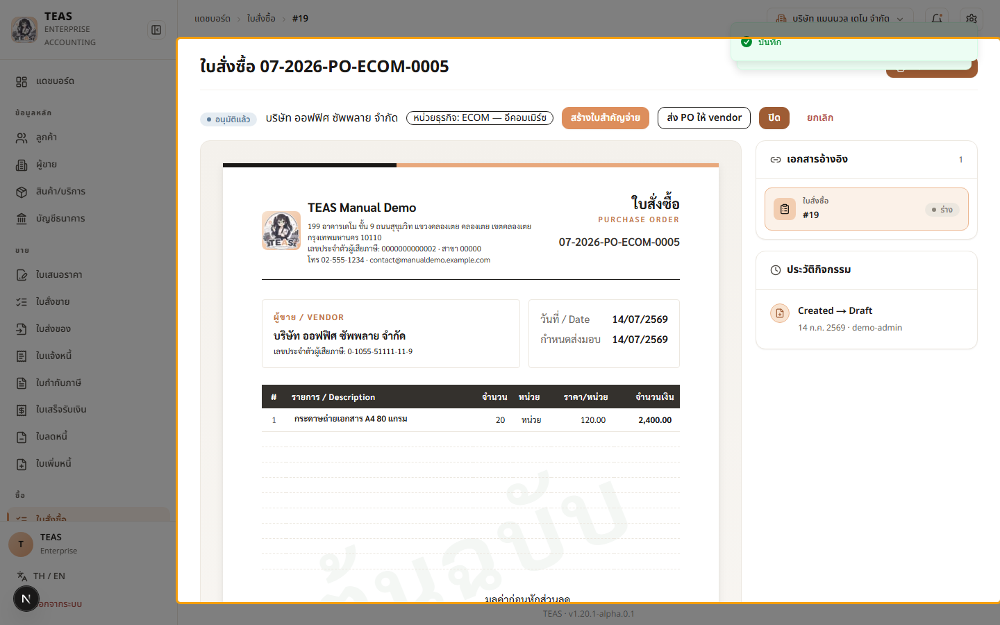
05.02 — บันทึกใบกำกับภาษีซื้อ
เงื่อนไขก่อนใช้งาน: login admin (สิทธิ์ vendor_invoice create + post) · ได้รับใบกำกับภาษีจากผู้ขายจริง (เลขที่/วันที่)
ใบกำกับภาษีซื้อ (Vendor Invoice) คือการ บันทึกใบกำกับภาษีที่ได้รับจากผู้ขาย เข้าระบบ เพื่อขอเครดิต ภาษีซื้อ (Input VAT) ไปหักกับภาษีขายในแบบ ภ.พ.30.
สิ่งที่ต้องระบุ:
- เลขที่ + วันที่ใบกำกับภาษีของผู้ขาย — เลขเอกสารต้นฉบับจากผู้ขาย (ไม่ใช่เลขของเรา).
- งวดเครดิตภาษีซื้อ (ม.82/4) — ภาษีซื้อใช้เครดิตได้ตั้งแต่เดือนของใบกำกับฯ ถึง +6 เดือน.
- หมวดค่าใช้จ่าย — กำหนดว่าภาษีซื้อ "เครดิตได้" หรือเป็น "ภาษีซื้อต้องห้าม" (เช่น ค่ารับรอง — เครดิตไม่ได้ตามกฎหมาย).
ถ้าเคยออกใบสั่งซื้อให้ผู้ขายรายนี้ (05.01) ระบบมีตัวเลือก "เชื่อมกับใบสั่งซื้อ" เพื่อดึง รายการมาให้ — ที่นี่แสดงการบันทึกแบบกรอกเอง.
ขั้นที่ 1
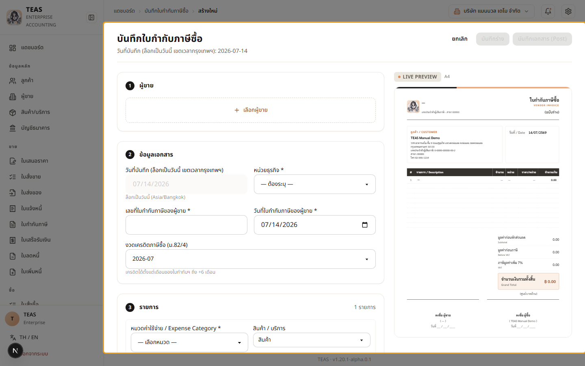
ขั้นที่ 2
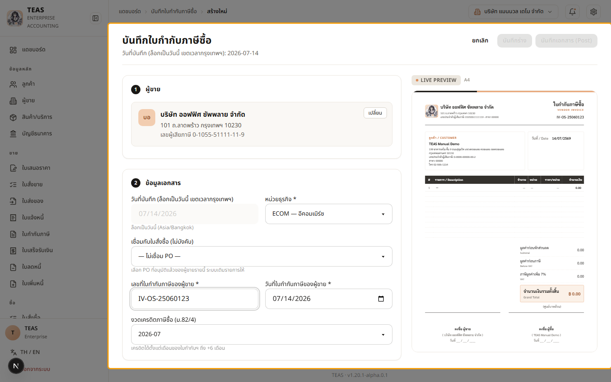
ขั้นที่ 3
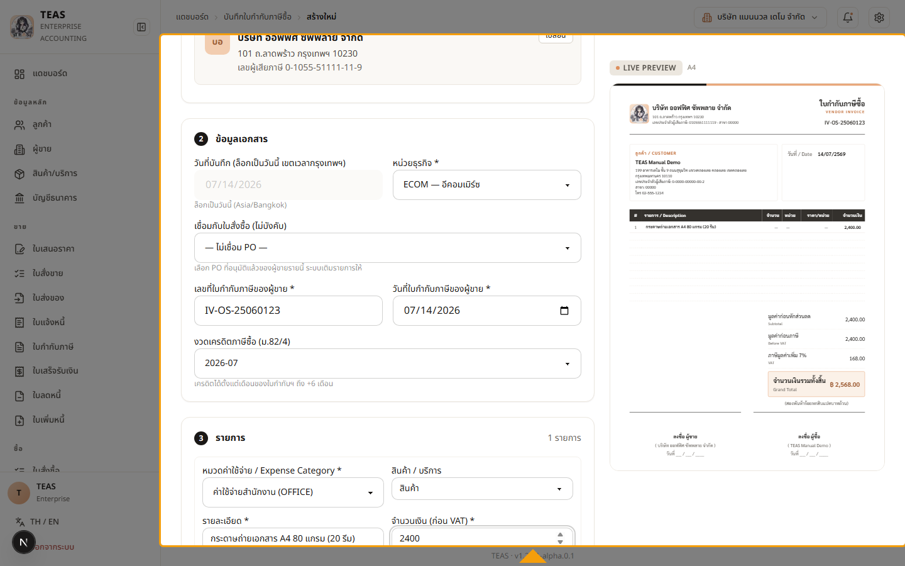
ขั้นที่ 4
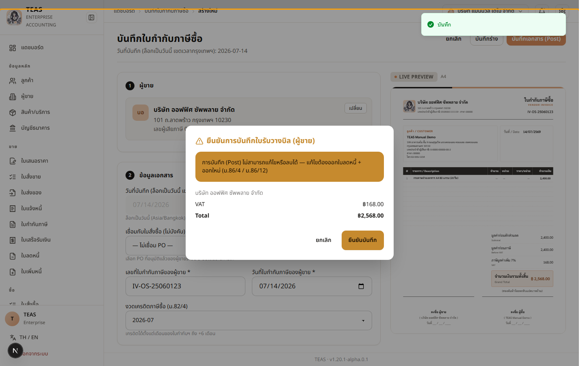
ขั้นที่ 5
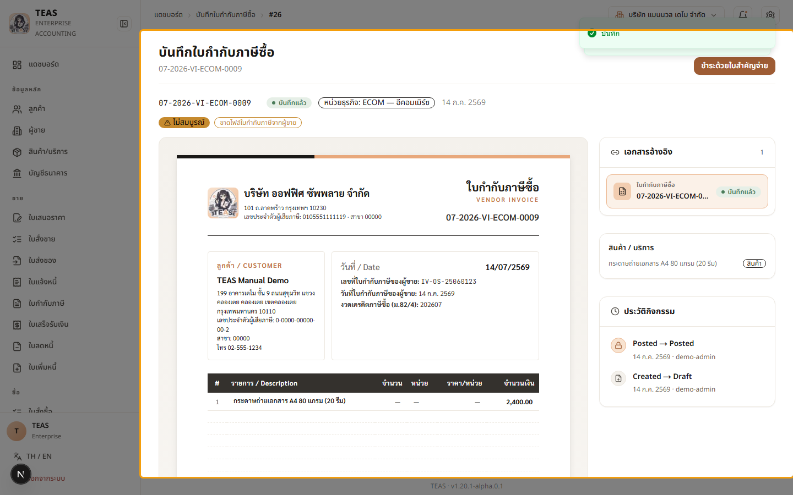
05.03 — ใบสำคัญจ่าย + หัก ณ ที่จ่าย (50ทวิ)
เงื่อนไขก่อนใช้งาน: login admin (สิทธิ์ payment_voucher create + approve + post) · มีผู้ขายประเภทค่าบริการ/ค่าเช่า + ประเภทเงินได้ 50ทวิ ในระบบ
ใบสำคัญจ่าย (Payment Voucher) คือเอกสารบันทึกการ จ่ายเงินให้ผู้ขาย. จุดสำคัญคือ ภาษีหัก ณ ที่จ่าย (Withholding Tax / WHT):
เมื่อจ่ายค่าบริการ ค่าเช่า ค่าวิชาชีพ ฯลฯ ให้ผู้รับเงิน ผู้จ่าย (กิจการเรา) มีหน้าที่ หักภาษีไว้ส่วนหนึ่ง แล้วนำส่งสรรพากรแทนผู้รับเงิน พร้อมออก หนังสือรับรองการหักภาษี ณ ที่จ่าย (50ทวิ) ให้ผู้รับเงินเก็บไว้:
- อัตราการหัก ขึ้นกับประเภทเงินได้ — เช่น ค่าบริการ 3%, ค่าเช่า 5%, ค่าโฆษณา 2%.
- แบบนำส่ง — จ่ายให้นิติบุคคล = ภ.ง.ด.53, จ่ายให้บุคคลธรรมดา = ภ.ง.ด.3.
- เงินจ่ายสุทธิ = มูลค่า + VAT − ภาษีหัก ณ ที่จ่าย (ผู้รับได้น้อยลงตามยอดที่ถูกหัก).
ตัวอย่างนี้จ่าย ค่าเช่าสำนักงานให้นิติบุคคล จึงหัก 5% และออก 50ทวิ แบบ ภ.ง.ด.53. (ซื้อ "สินค้า/ของ" ไม่ต้องหัก ณ ที่จ่าย — จึงใช้ผู้ขายค่าเช่า ไม่ใช่ผู้ขายของจาก 05.01.)
ขั้นที่ 1
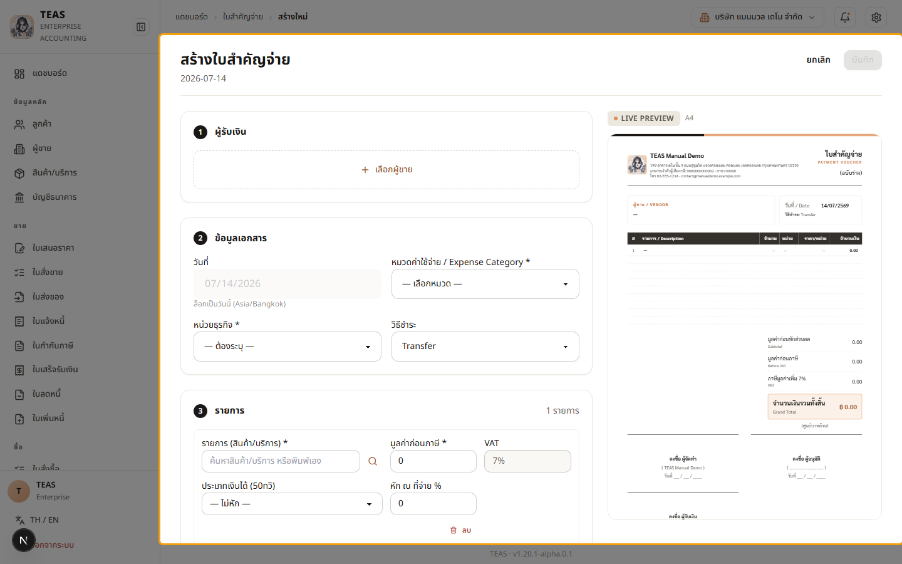
ขั้นที่ 2
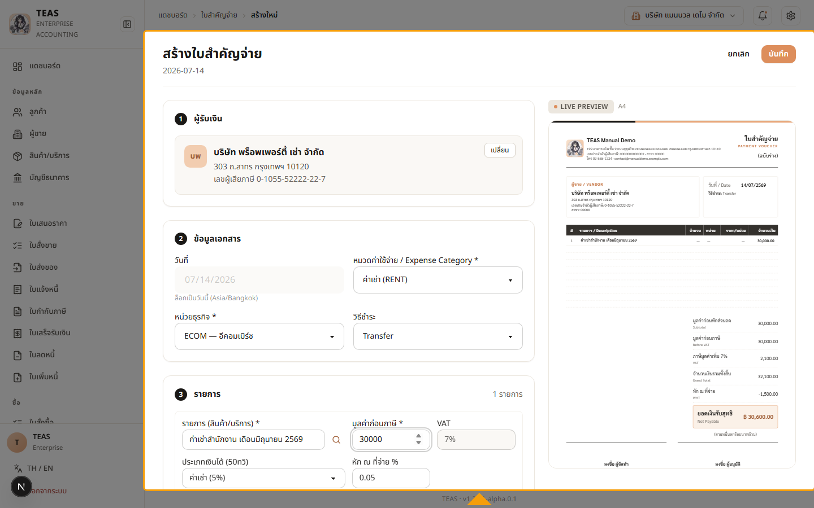
ขั้นที่ 3
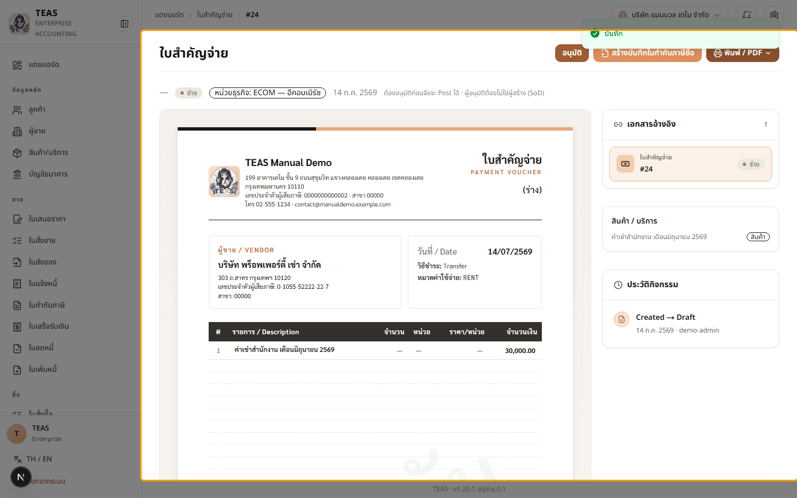
ขั้นที่ 4
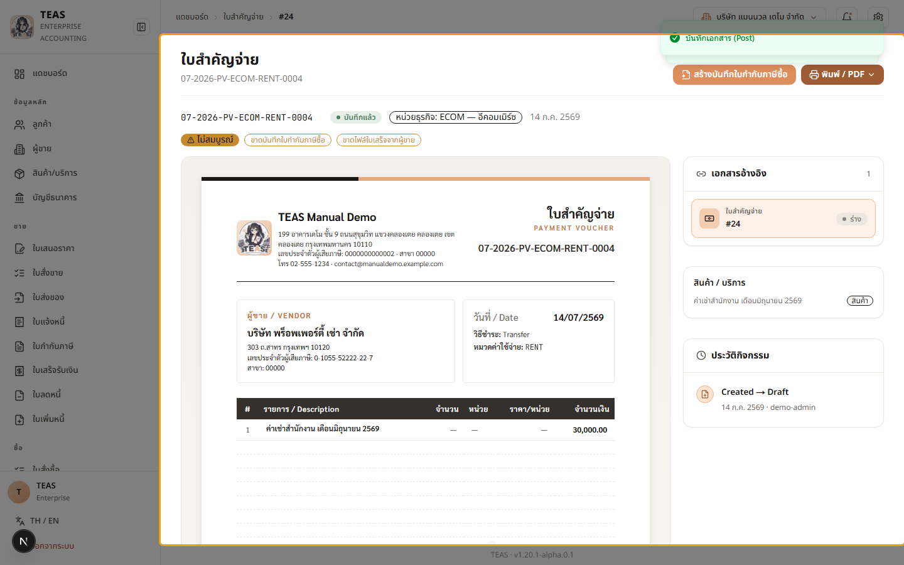
ขั้นที่ 5
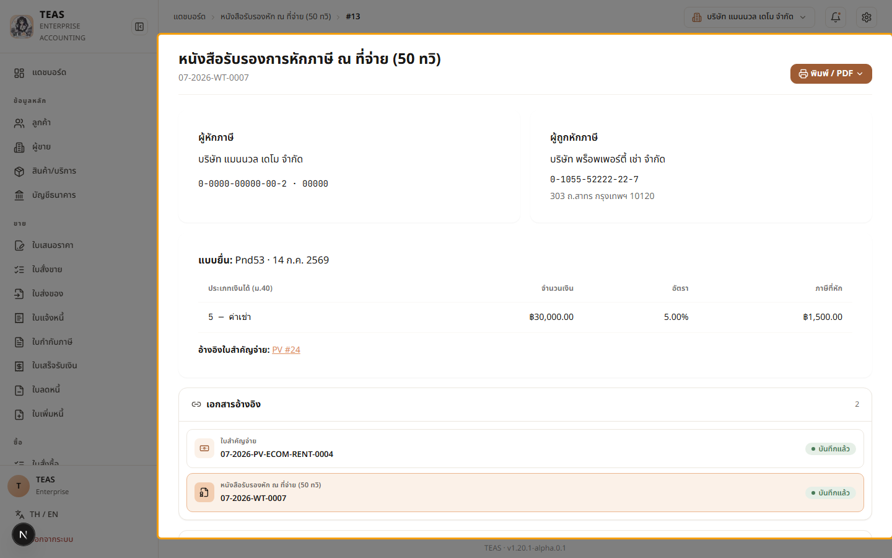
05.04 — ภาษีหัก ณ ที่จ่าย (WHT) โดยละเอียด
เงื่อนไขก่อนใช้งาน: login admin (สิทธิ์ payment_voucher) · มีประเภทเงินได้ 50ทวิ ในระบบ
ภาษีหัก ณ ที่จ่าย (Withholding Tax / WHT) คือภาษีที่ "ผู้จ่ายเงิน" หักจากผู้รับไว้ ส่วนหนึ่งแล้วนำส่งสรรพากรแทน พร้อมออกหนังสือรับรอง 50ทวิ ให้ผู้รับ (ดู flow เต็มใน 05.03).
อัตราหักขึ้นกับ "ประเภทเงินได้" (ม.40):
| ประเภทเงินได้ | อัตรา | ตัวอย่าง |
|---|---|---|
| ค่าโฆษณา | 2% | ค่าโฆษณา ค่าประชาสัมพันธ์ |
| ค่าบริการ / ค่าจ้างทำของ | 3% | ค่าที่ปรึกษา ค่าซ่อม ค่าออกแบบ |
| ค่าเช่า (อสังหาฯ) | 5% | ค่าเช่าสำนักงาน/อาคาร |
| ค่าวิชาชีพอิสระ | 3% | ค่าทนายความ ค่าสอบบัญชี |
แบบนำส่ง ขึ้นกับผู้รับเงิน: นิติบุคคล = ภ.ง.ด.53, บุคคลธรรมดา = ภ.ง.ด.3.
สำคัญ — เมื่อไหร่ "ไม่" หัก: การซื้อ สินค้า/ของ ไม่ต้องหัก ณ ที่จ่าย (เลือก "ไม่หัก"); หักเฉพาะ ค่าบริการ/ค่าเช่า/ค่าจ้าง ฯลฯ. และยอดน้อยกว่าเกณฑ์ขั้นต่ำ (1,000 บาท) ก็ไม่ต้องหัก.
ทั้งสองฝั่ง: ฝั่ง ซื้อ (บทนี้) = เราหักจากผู้ขายตอนจ่าย (ใบสำคัญจ่าย → 50ทวิ); ฝั่ง ขาย = ลูกค้าหักจากเรา → บันทึกตอนรับเงินในใบเสร็จ (ดู 04.05 ส่วน "หัก ณ ที่จ่าย").
ผู้จ่ายออกภาษีแทน (gross-up): ถ้าตกลงให้ผู้รับได้เต็มจำนวน ผู้จ่ายต้อง "ออกภาษีแทน" แล้ว gross-up ยอดภาษีเข้าไปในเงินได้ของผู้รับ — ระบบมีตัวเลือกให้ (บังคับอัตโนมัติสำหรับ ผู้ขายต่างประเทศที่ไม่มีเลข VAT ไทย).
ขั้นที่ 1
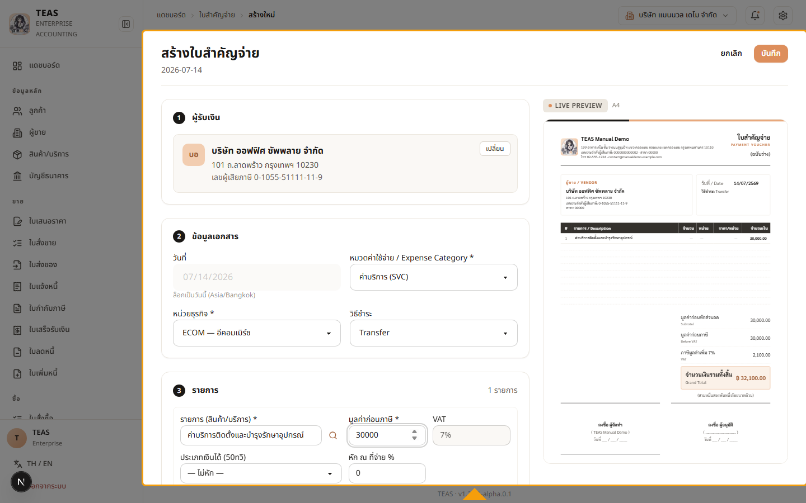
ขั้นที่ 2
ขั้นที่ 3
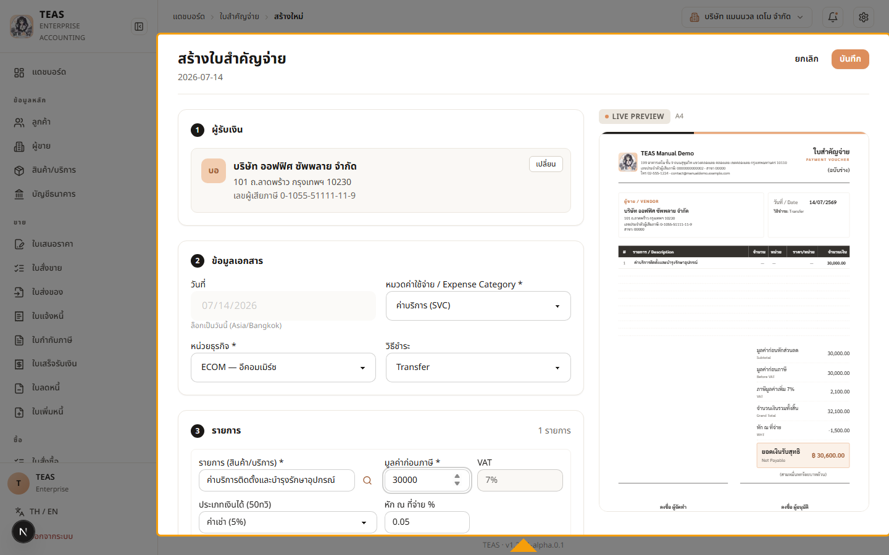
ขั้นที่ 4
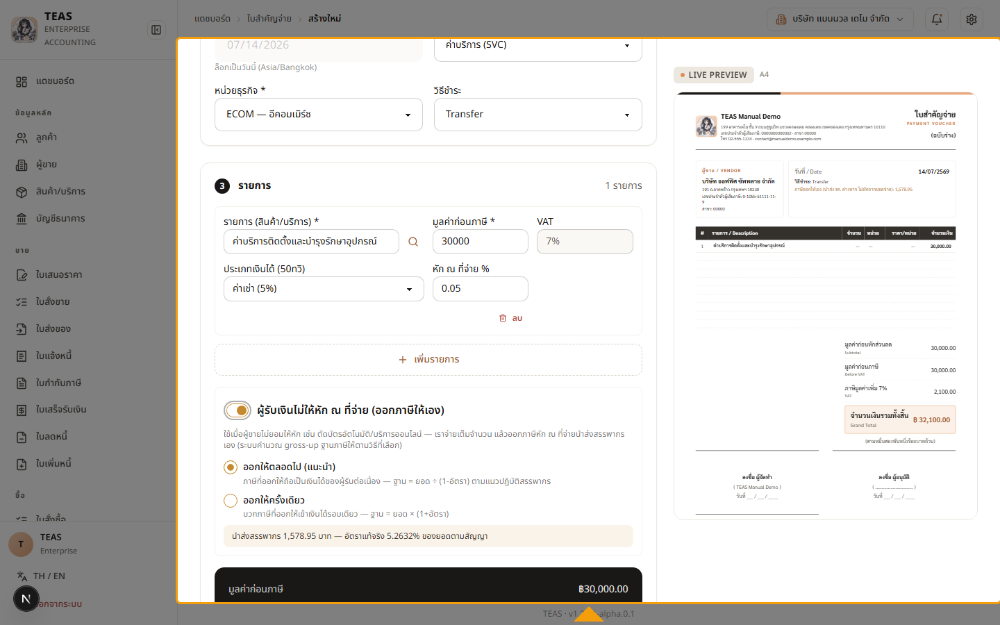
05.05 — ผู้ขาย จด VAT / ไม่จด VAT / ต่างประเทศ
เงื่อนไขก่อนใช้งาน: login admin (สิทธิ์ vendor_invoice) · มีผู้ขายหลายชนิด (VAT/ไม่จด VAT/ต่างประเทศ) ในระบบ
"ภาษีซื้อ (Input VAT)" ที่เคลมคืนได้ มีก็ต่อเมื่อ ผู้ขายจด VAT และออกใบกำกับภาษีให้. ระบบดูสถานะผู้ขายแล้วแสดงข้อความกำกับให้อัตโนมัติ — แบ่งผู้ขายเป็น 4 แบบ:
| ผู้ขาย | ภาษีซื้อ | หมายเหตุระบบ |
|---|---|---|
| ในประเทศ จด VAT | เคลมได้ปกติ | (ไม่มีข้อความ — กรณีปกติ) |
| ในประเทศ ไม่จด VAT | เคลมไม่ได้ | VAT รวมเป็นค่าใช้จ่าย |
| ต่างประเทศ ไม่มี VAT-D ไทย | คำนวณเอง | ภ.พ.36 reverse charge (นำส่งแทน) |
| ต่างประเทศ มี VAT-D ไทย | เคลมได้ปกติ | จดทะเบียน VAT-D ในไทยแล้ว |
(สถานะ VAT/ต่างประเทศ/VAT-D ตั้งที่ข้อมูลหลักผู้ขาย — ดู 03.02.)
ขั้นที่ 1
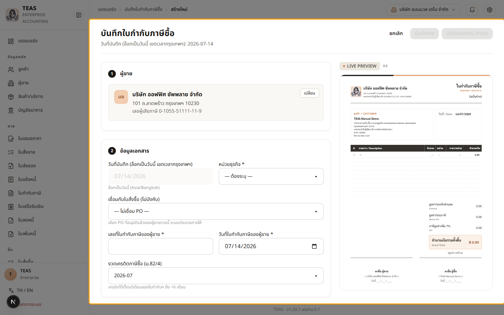
ขั้นที่ 2
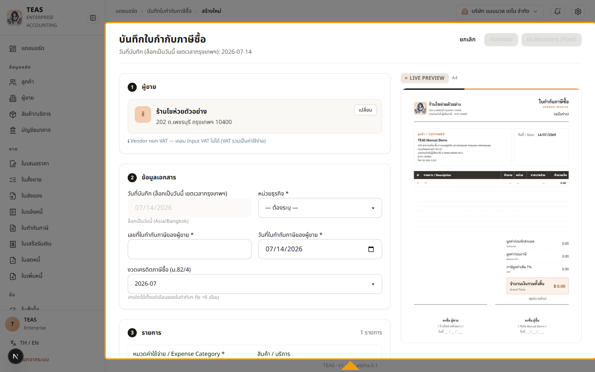
ขั้นที่ 3
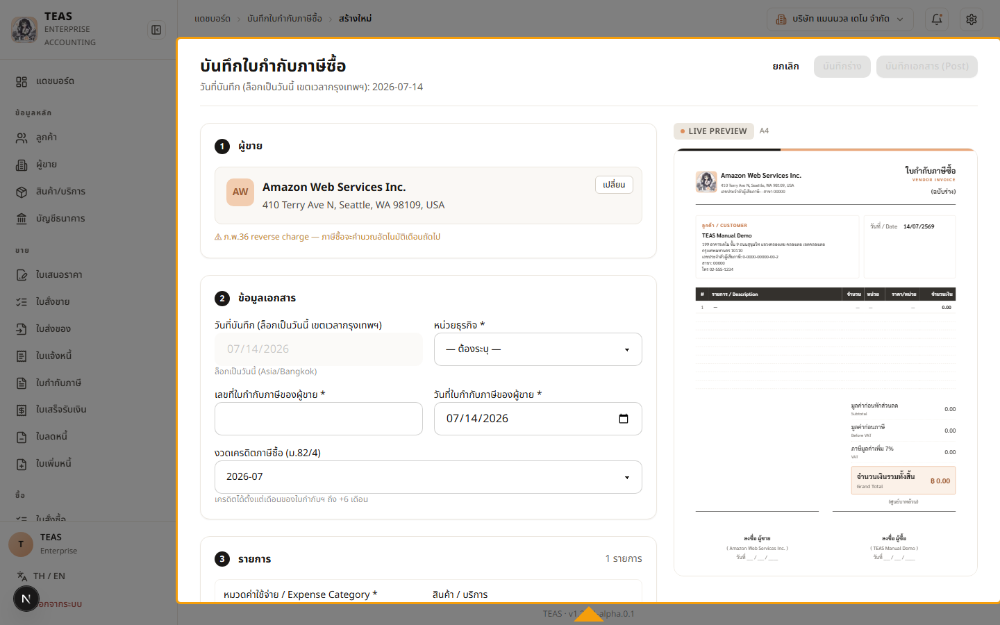
ขั้นที่ 4
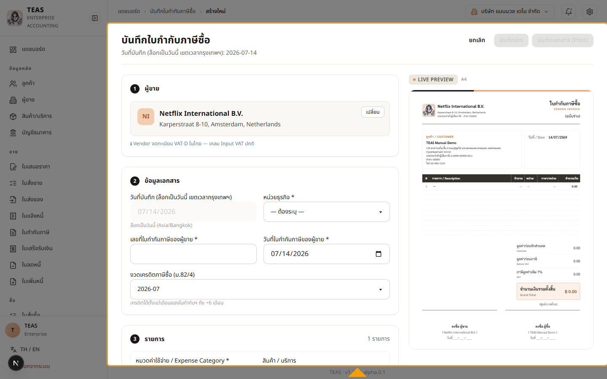